1. Funciones
1.1. Definición y ejemplos
Una función \(f\) es una regla que asigna a cada elemento \(x\) de un conjunto \(D\) exactamente un elemento de un conjunto \(E\), denotado \(f(x)\). Esta asignación podemos indicarla mediante la expresión \(f\colon D\rightarrow E\).
El conjunto \(D\) se llama dominio de la función. Usualmente escribiremos \(D=\text{Dom}(f)\) o \(D=D_f\). El rango o conjunto imagen de \(f\) consiste en todos los valores \(f(x)\) conforme \(x\) varía en su dominio, es decir
\[\operatorname{Im}(f)=\{y: y=f(x) \text{ para algún }x\in D\}\subseteq E.\]
Un símbolo que representa un número arbitrario en el dominio de \(f\) se llama variable independiente, mientras que uno en el rango de \(f\) se llama variable dependiente.
El número \(f(x)\) es el valor de la función \(f\) en \(x\), y lo leemos “\(f\) de \(x\)”. En general trabajaremos con funciones para las que \(D\) y \(E\) son subconjuntos de los números reales. Éstas reciben el nombre de funciones escalares.
Podemos pensar una función como si fuese una máquina: si \(x\) está en el dominio de \(f\) entonces ingresa en la máquina, que la acepta como una entrada. La máquina produce como salida \(f(x)\), según la regla que define a la función.
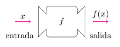
Así, podemos concebir al dominio como el conjunto de todas las entradas posibles \(x\) y a la imagen como el conjunto de todas las salidas posibles \(f(x)\).
Otra forma de representar una función es mediante un diagrama de flechas o diagrama de Venn. Cada flecha relaciona un elemento en \(D\) con su único valor asociado mediante \(f\) en el conjunto \(E\).
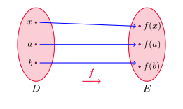
El método más común para visualizar una función es su gráfico (o gráfica). Si \(f\) es una función con dominio \(D\) su gráfico es el conjunto de pares ordenados \[\text{Gráf}(f)=\{(x,f(x)): x\in D\}.\]
En otras palabras, el gráfico está formado por los pares \((x,y)\) del plano que verifican que \(y=f(x)\), con \(x\) en el dominio de \(f\).
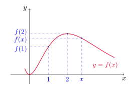
El gráfico da un esbozo útil del comportamiento o de la “historia de vida” de una función. En cada \(x\) del dominio, el valor correspondiente a \(f(x)\) se puede leer como la altura del gráfico sobre \(x\).
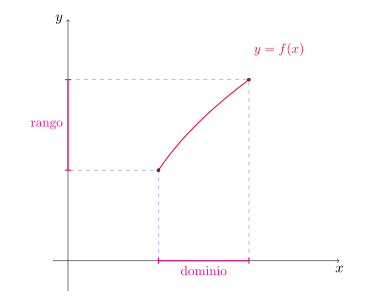
Dado el siguiente gráfico
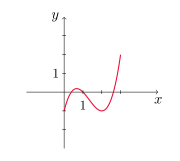
- Encontrar el valor de \(f(1)\) y \(f(2)\).
- ¿Cuáles son el dominio y el rango de \(f\)?
Observando el gráfico de la función podemos ver que \(f(1)=0\) y que \(f(2)=-1\). El dominio de \(f\) es \(D=[1,3]\) y el rango corresponde al intervalo \([-1,2]\).
Trazar la gráfica y encontrar el dominio y rango de cada función.
- \(f(x)=2x-1\).
- \(g(x)=x^2\).
Observemos que \(f\) es una función y lineal y \(g\) una cuadrática, por lo que sus gráficos corresponden a una recta y una parábola, respectivamente.
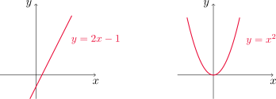
En relación a la función \(f\), tenemos que \(D=\text{Im}(f)=\mathbb{R}\). Con respecto a \(g\), tenemos que \(D=\mathbb{R}\) mientras que \(\text{Im}(g)=\mathbb{R}_0^+=[0,\infty)\), dado que \(x^2\geq 0\) para todo número real \(x\).
Un recipiente rectangular para almacenamiento, con su parte superior abierta, tiene un volumen de 10 \(m^3\). La longitud de su base es el doble de su ancho. Si el material de la base cuesta 10 dólares por \(m^2\) y el de los lados 6 dólares por \(m^2\), expresar el costo de fabricación en función del ancho de la base.
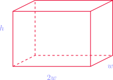
Si denotamos con \(w\) al ancho de la base, entonces su longitud es \(2w\). Si además \(h\) representa la altura de la caja, entonces podemos calcular el volumen como \[ V= (2w) \cdot w\cdot h=2w^2h.\]
Dado que el volumen es de 10 \(m^3\), tenemos que \(h=\displaystyle \frac{5}{w^2}\). Con esta relación podemos expresar el área de la base \(A_b\) de la caja y su área lateral \(A_\ell\) en función de \(w\).
\[A_b=(2w)\cdot w=2w^2 \quad \text{ y }\quad A_\ell=2\cdot (2w)\cdot h+ 2\cdot w\cdot h=6wh=\frac{30}{w}.\]
Ahora calculamos los costos \(C_b\) y \(C_\ell\) para la base y el lateral, respectivamente.
\[C_b=10\, \frac{\text{dólares}}{m^2}\cdot (2w^2)\, m^2= 20w^2\, \text{dólares}.\]
\[C_\ell=6\, \frac{\text{dólares}}{m^2}\cdot \frac{30}{w}\, m^2= \frac{180}{w}\, \text{dólares}.\]
Finalmente, el costo total es \(C=C_b+C_\ell=20w^2+\displaystyle\frac{180}{w}\), expresado en dólares.
Encuentre el dominio de cada función.
- \(f(x)=\sqrt{x+2}\)
- \(g(x)=\displaystyle \frac{1}{x^2-x}\)
Para determinar el dominio de \(f\), observemos que la función está bien definida siempre y cuando \(x+2\geq 0\), o equivalentemente \(x\geq -2\). Por lo tanto, \(D=[-2,\infty)\).
En el caso de \(g\), recordemos que la división por cero no está definida. Ya que \(x^2-x=x(x-1)\), entonces \(x\) no puede tomar el valor 0 ni el valor 1. Por lo tanto, \(D=\mathbb{R}\setminus \{0,1\}\).
Relación entre curvas y gráfico de funciones
La gráfica de una función resulta ser una curva en el plano \(xy\). Pero dada cualquier curva plana, ¿cómo saber si se trata del gráfico de una función? Para responder esta pregunta, utilizamos la siguiente propiedad.
Prueba de la línea vertical
Una curva en el plano \(xy\) es la gráfica de una función de \(x\) si y sólo si ninguna línea vertical se interseca con la curva más de una vez.
Si cada recta vertical \(x=a\) corta a la curva sólo una vez, en el punto \((a,b)\), entonces definimos la función \(f\) de modo tal que \(f(a)=b\).
Sin embargo, si hay algún valor \(a\) para el cual \(x=a\) corta a la curva en más de un punto, ésta no puede representar a una función pues no podemos asignar dos valores distintos \(b\) y \(c\) a \(x=a\).
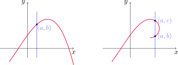
Por ejemplo, si consideramos \(x=y^2-2\), ésta no es la gráfica de una función de \(x\), según la prueba de la línea vertical.
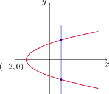
Sin embargo, si despejamos la variable \(y\) obtenemos \[|y|=\sqrt{x+2}\quad\text{ o bien }\quad y=\pm\sqrt{x+2},\]
y cada una de estas ecuaciones se corresponde con las dos mitades de la parábola de arriba. Cada una de estas curvas obtenidas resulta ser el gráfico de una función de \(x\).
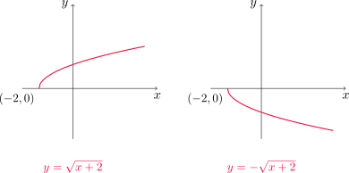
Funciones seccionalmente definidas
Estas funciones se definen con diferentes reglas en diferentes partes de su dominio.
Sea \(f\) la función definida por \[ f(x)= \begin{cases} 1-x & \text{ si } x\leq 1,\\ x^2 & \text{ si } x>1. \end{cases} \]
Calcular \(f(0)\), \(f(1)\), \(f(2)\) y trazar la gráfica.
Para calcular \(f(0)\) observemos que debemos usar la expresión \(1-x\), ya que \(0\leq 1\). Entonces resulta \(f(0)=1-0=1\). De la misma manera, \(f(1)=1-1=0\) y \(f(2)=2^2=4\), ya que \(2>1\).
La gráfica de la función resulta
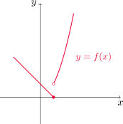
Un ejemplo muy común de función seccionalmente definida y que utilizaremos con frecuencia es la función valor absoluto. El valor absoluto de un número \(x\) se define como
\[ |x|= \begin{cases} x & \text{si } x\geq 0,\\ -x & \text{si } x<0. \end{cases} \]
El valor absoluto de \(x\) puede interpretarse como la distancia desde \(x\) hasta \(0\) en la recta numérica. De la definición podemos ver que \(|x|\geq 0\) para todo \(x\).
Trazar la gráfica de \(y=|x|\).
Usando la definición de valor absoluto, obtenemos la gráfica al dibujar la recta \(y=x\) sólamente para \(x\geq 0\) e \(y=-x\) para cuando \(x<0\).
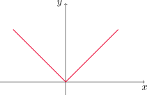
Encontrar una fórmula explícita para la función dada en el siguiente gráfico.
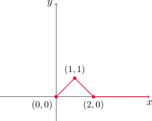
Notemos que el gráfico de la función está compuesto por tres tramos de recta. El primero de ellos es el segmento que une los puntos \((0,0)\) y \((1,1)\). Utilizando la ecuación de la recta que pasa por dos puntos \((x_1,y_1)\) y \((x_2,y_2)\) obtenemos
\[ y-y_1=\frac{y_2-y_1}{x_2-x_1}(x-x_1) \]
\[ y-0=\frac{1-0}{1-0}(x-0) \quad \text{ o, equivalentemente }\quad y=x. \]
Repitiendo el mismo proceso para el segundo tramo de recta, que conecta los puntos \((1,1)\) y \((2,0)\) resulta
\[ y-1=\frac{0-1}{2-1}(x-1) \quad \text{ o, equivalentemente }\quad y=-x+2. \]
Finalmente, en el tercer tramo de recta la función es constante y nula, con lo cual su ecuación es simplemente \(y=0\).
Resumiendo todo lo realizado, escribimos a \(f\) como una función definida por partes \[ f(x)=\begin{cases} x & \text{si } 0\leq x\leq 1,\\ -x+2 & \text{si } 1<x\leq 2,\\ 0 & \text{si } x>2. \end{cases} \]
Simetría
Decimos que una función \(f\) es par si satisface \[f(x)=f(-x)\]
para todo \(x\) en el dominio de \(f\).
Geométricamente, las funciones pares son simétricas respecto del eje \(y\). Si conocemos el gráfico de \(f\) para \(x\geq 0\), basta con reflejarlo sobre el eje \(y\) para obtener el gráfico completo.
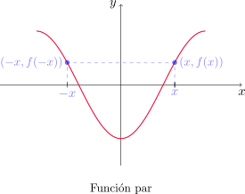
Por ejemplo, la función \(f(x)=x^2\) es par, pues \[f(-x)=(-x)^2=x^2=f(x),\]
para todo \(x\).
Decimos que una función \(f\) es impar si satisface \[f(x)=-f(-x)\]
para todo \(x\) en el dominio de \(f\).
La gráfica de las funciones impares son simétricas respecto del origen de coordenadas. Si conocemos el gráfico de \(f\) para \(x\geq 0\), basta con rotarlo 180 grados respecto al origen para conocer el gráfico completo.
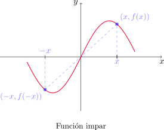
Como ejemplo de función impar podemos mencionar \(f(x)=x^3\). En efecto, \[f(-x)=(-x)^3=-x^3=-f(x),\] para todo \(x\).
Determinar si cada una de las siguientes funciones es par, impar, o ninguna.
- \(f(x)=x^3+x\).
- \(g(x)=1-x^4\).
- \(h(x)=2x-x^2\).
Comencemos por la función \(f\). Notemos que \[f(-x)=(-x)^3+(-x)=-x^3-x=-(x^3+x)=-f(x)\]
para todo \(x\in\mathbb{R}\). Entonces \(f\) es impar.
En el caso de \(g\) obtenemos \[g(-x)=1-(-x)^4=1-x^4=g(x)\] para todo \(x\in\mathbb{R}\). En consecuencia, \(g\) es par.
Por último \[h(-x)=2(-x)-(-x)^2=-2x-x^2.\] Ésta última expresión no coincide con \(h(x)\) ni con \(-h(x)\), por lo tanto \(h\) no es par ni impar.
Funciones crecientes y decrecientes
En la siguiente figura vemos que el gráfico de \(f\) sube desde \(A\) hasta \(B\), desciende de \(B\) a \(C\) y luego vuelve a subir desde \(C\) hasta \(D\).
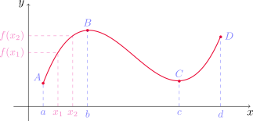
En este caso decimos que \(f\) está creciendo sobre el intervalo \([a,b]\), decreciendo sobre \([b,c]\) y luego crece de nuevo en \([c,d]\).
Decimos que la función \(f\) es creciente sobre un intervalo \(I\) si \[f(x_1)<f(x_2) \quad\text{ siempre que }\quad x_1<x_2 \quad \text{ en }\quad I.\]
Análogamente, decimos que \(f\) es decreciente sobre el intervalo \(I\) si
\[f(x_1)>f(x_2) \quad\text{ siempre que }\quad x_1<x_2 \quad \text{ en }\quad I.\]
Observar que para que una función sea creciente o decreciente en un intervalo, las correspondientes desigualdades de arriba tienen que valer para todo par de números \(x_1,x_2\) en el intervalo.
1.2. Modelos matemáticos: un catálogo de funciones básicas
Modelos lineales
Una función lineal es de la forma
\[ f(x)=mx+b \]
donde \(m\) es la pendiente y \(b\) la ordenada al origen.
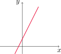
El gráfico de estas funciones corresponde a una recta en el plano y crecen en una proporción constante (es decir, \(y\) se incrementa de igual forma cuando \(x\) se incrementa a intervalos constantes).
A medida que el aire seco se mueve hacia arriba, se expande y se enfría. Supongamos que la función que modela la temperatura en función de la altura es lineal.
- Si la temperatura del suelo es de 20°C y a una altura de 1 km es de 10°C, expresar la temperatura \(T\) (en °C) como una función de la altura \(h\) (en kilómetros).
- Trazar la gráfica de la función del inciso (1). ¿Qué representa la pendiente?
- ¿Cuál es la temperatura a una altura de 2.5 km?
Queremos expresar la temperatura como una función lineal de la altura. Entonces escribimos \(T(h)=mh+b\), donde \(m\) y \(b\) son los coeficientes que queremos determinar. Como la temperatura al nivel del suelo es de 20°C, tenemos que \(T(0)=20\), es decir
\[ 20=m\cdot 0+b=b, \]
de donde \(b=20\). Por otra parte \(T(1)=10\), con lo cual
\[ 10=m\cdot 1+b=m+20, \]
con lo que deducimos que \(m=-10\). Finalmente nuestra función \(T\) resulta
\[ T(h)=-10h+20 \]
y nos da la temperatura expresada en °C de la altura \(h\) dada en kilómetros.
El gráfico de la función \(T\) es el siguiente
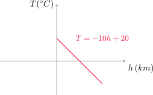
En este caso la pendiente representa la relación de cambio de la temperatura con respecto a la altura. Dado que \(m=-10\), esto significa que por cada kilómetro que se ascienda en altura, la temperatura desciende 10°C.
Si \(h=2.5\), entonces \(T(2.5)=-10(2.5)+20=-5\).
Polinomios
A una función \(P\) se la llama polinomio si es de la forma
\[p(x)=a_nx^n+a_{n-1}x^{n-1}+\dots+a_2x^2+a_1x+a_0=\sum_{i=0}^n a_ix^i,\]
donde \(n\) es un entero no negativo y los números \(a_i\) son constantes llamadas coeficientes del polinomio, para \(1\leq i\leq n\). A \(a_n\) se lo llama coeficiente principal y a \(a_0\) término independiente de \(p\).
El dominio de cualquier polinomio es \(\mathbb{R}\). Si \(a_n\neq 0\), decimos que el grado de \(p\) es \(n\). Por ejemplo, \[p(x)=2x^6-x^4+\frac{2}{3}x^3+\sqrt{2}\] es un polinomio de grado 6.
Los polinomios de grado 1 son de la forma \(p(x)=mx+b\), es decir, son funciones lineales.
Si \(p\) tiene grado 2, entonces \[p(x)=ax^2+bx+c\] y se llama función cuadrática. Su gráfica es una parábola que abre hacia arriba cuando \(a>0\) y hacia abajo cuando \(a<0\).
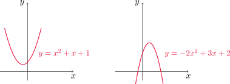
- Un polinomio de grado 3 tiene la forma \[p(x)=ax^3+bx^2+cx+d,\quad a\neq 0\] y recibe el nombre de función cúbica. Algunos ejemplos son
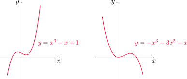
Funciones de potencia
Una función de la forma
\[f(x)=x^a\]
donde \(a\) es una constante, recibe el nombre de función potencia. Consideramos diferentes casos:
\(a=n\), con \(n\) entero positivo. Observemos algunos ejemplos, que incluyen algunos modelos ya estudiados.
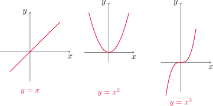
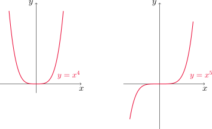
La forma general de la gráfica de \(f(x)=x^n\) depende de si \(n\) es par o impar, obteniendo respectivamente una gráfica simétrica respecto del eje \(y\) o del origen de coordenadas.
Conforme aumenta \(n\), la gráfica se hace más aplastada cerca del origen y se vuelve más pronunciada cuando \(|x|\geq 1\).
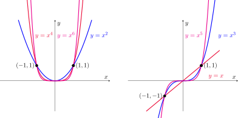
\(a=1/n\), donde \(n\) es un entero positivo. La función \(f(x)=x^{1/n}=\sqrt[n]{x}\) se denomina función raíz. Cuando \(n\) es par, el dominio de la función es \([0,\infty)\). Para \(n\) impar, el dominio es \(\mathbb{R}\) y la gráfica es simétrica respecto del origen de coordenadas.
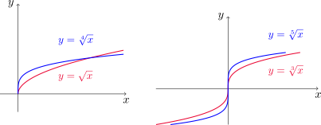
- \(a=-1\). La función \(\displaystyle f(x)=x^{-1}= \frac{1}{x}\) se denomina función recíproca. Se trata de una hipérbola que tiene a los ejes coordenados como asíntotas. El dominio de esta función es \(D=\mathbb{R}\setminus \{0\}\).
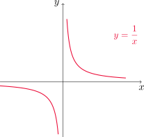
Funciones racionales
Una función racional \(f\) es un cociente de dos polinomios
\[ f(x)=\frac{P(x)}{Q(x)}. \]
Dado que no es posible dividir por cero, el dominio de \(f\) consiste de todos los valores de \(x\) tales que \(Q(x)\neq 0\).
Por ejemplo, las funciones \[ f(x)=\frac{1}{x},\quad g(x)=\frac{2x^4-x^2+1}{x^2-4} \]
son racionales.
Funciones algebraicas
Son aquellas funciones que pueden construirse utilizando operaciones algebraicas (suma, resta, multiplicación, división, raíces). En particular, cualquier función racional es también algebraica. Otros ejemplos que podemos mencionar son \[ f(x)=\sqrt{x^2+1}, \quad g(x)=\frac{x^4-16x^2}{x+\sqrt{x}}+(x-2)\sqrt[3]{x+1}. \]
Funciones trigonométricas
Por convención, siempre utilizaremos el argumento de estas funciones medido en radianes (recordemos que \(180^{\circ}=\pi\) radianes). Veamos cómo lucen los gráficos para las funciones seno y coseno.
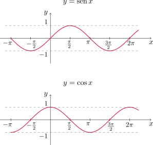
El dominio de estas funciones es \(D=\mathbb{R}\) y el rango es el intervalo \([-1,1]\). Es decir, tenemos que \[ -1\leq \sin x\leq 1 \quad \text { y }\quad -1\leq \cos x\leq 1 \] o, en términos de valor absoluto \[ |\sin x|\leq 1 \quad \text{ y }\quad |\cos x|\leq 1. \]
Además \[ \sin x = 0 \quad\text{ si y sólo si }\quad x=n\pi, \,\,n\in\mathbb{Z} \]
y
\[ \cos x = 0 \quad\text{ si y sólo si }\quad x=(2n+1)\pi/2, \,\,n\in\mathbb{Z}. \]
Estas dos funciones son periódicas de período \(2\pi\). Esto significa que \[ \sin(x+2\pi)=\sin x\quad \text{ y }\quad \cos(x+2\pi)=\cos x \] para todo valor de \(x\).
La función tangente está dada por \(\displaystyle\tan x=\frac{\sin x}{\cos x}.\)
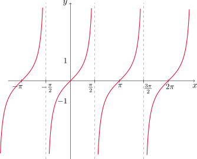
Observar que esta función no está definida cuando \(\cos x=0\), es decir, cuando \(x=(2n+1)\pi/2\), con \(n\in\mathbb{Z}\). Su rango es todo \(\mathbb{R}\), es decir, toma todos los valores reales.
La función tangente es periódica de período \(\pi\). Esto quiere decir que \[ \tan(x+\pi)=\tan x \] para todo \(x\) en el dominio.
Funciones exponenciales
Son de la forma
\[ f(x)=a^x \]
donde \(a\) es un número positivo. A continuación vemos las gráficas para \(a=2\) y \(a=1/2\), respectivamente.
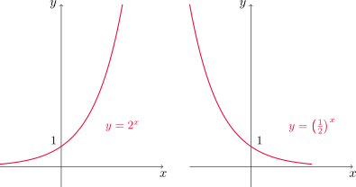
En ambos casos el dominio es \(\mathbb{R}\) y el rango el intervalo \((0,\infty)\). Observemos además que estas funciones son crecientes cuando \(a>1\) y decrecientes cuando \(0<a<1\).
Funciones logarítmicas
Son de la forma
\[ f(x)=\log_a x \]
donde \(a>0\) y \(a\neq 1\). Estas son las inversas de las funciones exponenciales. Su dominio es \((0,\infty)\) y su rango es \(\mathbb{R}\).
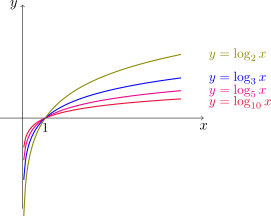
Funciones trascendentes
Estas funciones no son algebraicas. Incluyen a las trigonométricas y sus inversas, exponenciales, logarítmicas, entre otras.
Clasificar las siguientes funciones como algunos de los tipos analizados anteriormente.
- \(\displaystyle f(x)=5^x\phantom{\frac{x^5}{x^3}}\)
- \(g(x)=x^5\)
- \(\displaystyle h(x)=\frac{1+x}{1-\sqrt{x}}\)
- \(u(t)=1-t+5t^4\)
Las funciones \(g\) y \(u\) son polinómicas. Por otro lado, \(f\) es una función exponencial de base \(a=5\) y \(h\) es una función algebraica.
1.3: Funciones nuevas a partir de funciones antiguas
En esta sección veremos cómo obtener el gráfico de ciertas funciones más generales que las aprendidas en la sección previa. Veamos algunos tipos de transformaciones que pueden aplicarse a la gráfica de una función y qué efecto tienen.
Traslaciones
Consideremos \(c>0\) y partimos del gráfico de \(y=f(x)\). Entonces
| Para obtener el gráfico de | Se desplaza el de \(y=f(x)\) |
|---|---|
| \(y=f(x)+c\) | \(c\) unidades hacia arriba |
| \(y=f(x)-c\) | \(c\) unidades hacia abajo |
| \(y=f(x-c)\) | \(c\) unidades a la derecha |
| \(y=f(x+c)\) | \(c\) unidades a la izquierda |
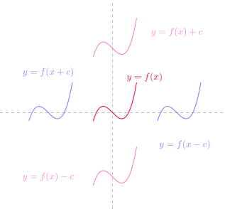
Alargamientos y reflexione verticales y horizontales
Consideremos ahora \(c>1\) y partimos del gráfico de \(y=f(x)\). Entonces
| Para obtener el gráfico de | El de \(y=f(x)\) debe |
|---|---|
| \(y=cf(x)\) | alargarse verticalmente en un factor de \(c\) |
| \(y=(1/c)f(x)\) | comprimirse verticalmente en un factor de \(c\) |
| \(y=f(cx)\) | \(c\) comprimirse horizontalmente en un factor \(c\) |
| \(y=f(x/c)\) | \(c\) alargarse horizontalmente en un factor \(c\) |
| \(y=-f(x)\) | \(c\) reflejarse respecto del eje \(x\) |
| \(y=f(-x)\) | \(c\) reflejarse respecto del eje \(y\) |
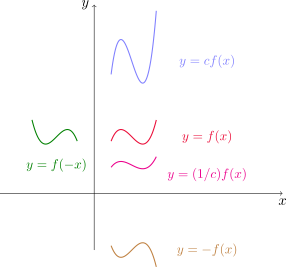
Ilustremos estas transformaciones con la función \(y=\cos x\). Dibujamos la gráfica junto a la de las funciones \(y=c\cos x\), para \(c=2\) y \(c=1/2\).
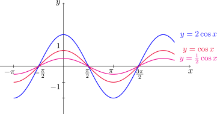
Dibujamos ahora \(y=\cos(cx)\), también para \(c=2\) y \(c=1/2\).
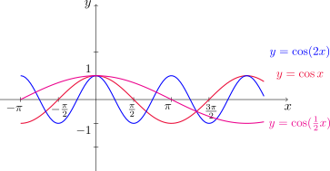
Partiendo del gráfico de \(y=f(x)=\sqrt{x}\) usar transformaciones para dibujar el de las funciones
\(f_1(x)=\sqrt{x}-2\)
\(f_2(x)=\sqrt{x-2}\)
\(f_3(x)=-\sqrt{x}\)
\(f_4(x)=2\sqrt{x}\)
\(f_5(x)=\sqrt{-x}\)
El gráfico de \(f_1\) se obtiene trasladando el de \(f\) dos unidades verticalmente hacia abajo.
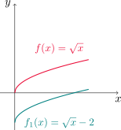
Si trasladamos el gráfico de \(f\) dos unidades hacia la derecha, obtenemos el gráfico de \(f_2\).
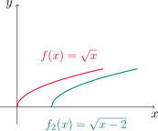
Para el caso de \(f_3\) basta con reflejar el gráfico de \(f\) con respecto al eje \(x\).
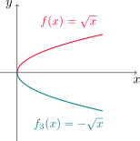
El gráfico de \(f_4\) resulta de alargar el de \(f\) de forma vertical en un factor de 2.
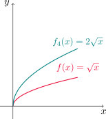
Por último, reflejando el gráfico de \(f\) respecto al eje \(y\) obtenemos el de \(f_5\).
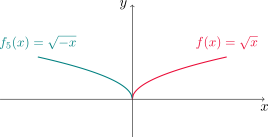
Esbozar el gráfico de la función \(f(x)=x^2+6x+10\).
Podemos graficar sencillamente a \(f\) si completamos cuadrados. En efecto, observemos que
\[ x^2+6x+10=(x^2+6x+9)-9+10=(x+3)^2+1. \]
Ahora, partiendo del gráfico de \(y=x^2\) podemos obtener el de \(f\) realizando un desplazamiento horizontal tres unidades para la izquierda, seguido de un desplazamiento vertical de una unidad hacia arriba.
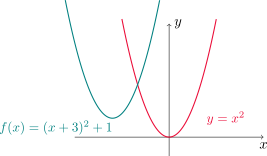
Trazar el gráfico de las funciones
- \(y=\operatorname{sen}(2x)\)
- \(y=1-\operatorname{sen} x\)
En este caso tomamos de base el gráfico de la función seno, es decir, \(y=\operatorname{sen} x\). Para la primera, debemos realizar una compresión horizontal en un factor de 2 y el gráfico resulta
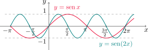
Para la segunda función debemos realizar dos movimientos: primero reflejamos \(y=\operatorname{sen} x\) con respecto al eje \(x\) y luego trasladamos el gráfico una unidad verticalmente hacia arriba.
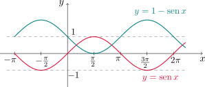
Dibujar la función \(y=|x^2-1|\).
Si aplicamos directamente la definición de valor absoluto , obtenemos \[ |x^2-1|=\begin{cases} x^2-1 & \text{si } x^2-1\geq 0,\\ -(x^2-1) & \text{si } x^2-1<0. \end{cases} \]
Observemos a continuación que \[ x^2-1\geq 0 \quad \Longleftrightarrow \quad x^2\geq 1 \quad \Longleftrightarrow \quad |x|\geq 1 \quad \Longleftrightarrow \quad x\geq 1 \quad \text{ o }\quad x\leq -1, \]
y también
\[ x^2-1< 0 \quad \Longleftrightarrow \quad x^2< 1 \quad \Longleftrightarrow \quad |x|< 1 \quad \Longleftrightarrow \quad -1<x<1. \]
Con esto, podemos reescribir la función de la siguiente manera \[ |x^2-1|=\begin{cases} x^2-1 & \text{si } \quad x\geq 1 \quad \text{ o }\quad x\leq -1,\\ -x^2+1 & \text{si } \quad -1<x<1. \end{cases} \]
Por lo tanto, el gráfico es
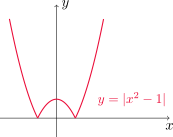
El procedimiento utilizado en el ejemplo anterior se puede generalizar de forma sencilla a cualquier función. En efecto, consideremos una función \(f\) y supongamos que su gráfico está dado por
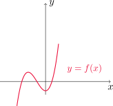
Si queremos dibujar \(y=|f(x)|\) podemos usar la definición de valor absoluto para escribir \[ |f(x)|=\begin{cases} f(x) & \text{si } f(x)\geq 0,\\ -f(x) & \text{si } f(x)<0. \end{cases} \]
Entonces el gráfico de \(y=|f(x)|\) coincide con el de \(f\) cuando los valores de la función son no negativos (esto es, cuando la curva está sobre o por encima del eje \(x\)) y en caso contrario se refleja respecto de este eje. Así, resulta
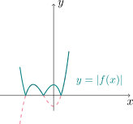
Combinación de funciones
Dadas dos funciones \(f\) y \(g\), podemos formar otras nuevas realizando operaciones entre ellas.
La suma y resta se definen como \[ (f+g)(x)=f(x)+g(x)\quad \text{ y }\quad (f-g)(x)=f(x)-g(x). \]
Si \(A\) y \(B\) son los respectivos dominios de \(f\) y de \(g\), el dominio de las funciones de arriba es \(D=A\cap B\).
Por ejemplo, si \(f(x)=\sqrt{x}\) y \(g(x)=\sqrt{2-x}\), tenemos que \(D_f=[0,\infty)\) y \(D_g=(-\infty,2]\). De esta manera, \[ (f+g)(x)=f(x)+g(x)=\sqrt{x}+\sqrt{2-x} \] tiene como dominio \(D_f\cap D_g=[0,2]\).
El producto y el cociente se definen de manera análoga \[ (fg)(x)=f(x)g(x)\quad\text{ y }\quad \left(\frac{f}{g}\right)(x)=\frac{f(x)}{g(x)}. \]
El dominio de \(fg\) es \(A\cap B\) y el de \(f/g\) es \((A\cap B)\setminus\{x\in B: g(x)=0\}\).
Por ejemplo, si \(f(x)=x^2\) y \(g(x)=x-1\), entonces la función cociente es \[ \left(\frac{f}{g}\right)(x)=\frac{f(x)}{g(x)}=\frac{x^2}{x-1}, \] y su dominio es \(\mathbb{R}\setminus \{1\}\).
Existe otra manera de combinar dos funciones. Dadas \(f\) y \(g\), si \(x\) está en el dominio de \(g\) y su imagen por \(g\), \(g(x)\) está en el dominio de \(f\), entonces podemos calcular \(f(g(x))\). El resultado es una nueva función \(h(x)=f(g(x))\) llamada composición de \(f\) y \(g\), y denotada por \(f\circ g\).
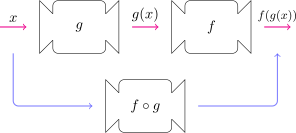
El dominio de \(f\circ g\) es el conjunto de todos los \(x\) en el dominio de \(g\) tales que \(g(x)\) está en el dominio de \(f\).
Si \(f(x)=x^2\) y \(g(x)=x-3\), hallar \(f\circ g\) y \(g\circ f\).
Por un lado tenemos que \[ (f\circ g)(x)=f(g(x))=f(x-3)=(x-3)^2 \]
mientras que
\[ (g\circ f)(x)=g(f(x))=g\left(x^2\right)=x^2-3. \]
En general no es cierto que \(f\circ g=g\circ f\). La notación \(f\circ g\) indica que primero se aplica \(g\) y luego \(f\) (y se lee “\(g\) compuesta con \(f\)”).
Sean \(f(x)=\sqrt{x}\) y \(g(x)=\sqrt{2-x}\). Hallar las siguientes funciones y sus respectivos dominios
- \(f\circ g\).
- \(g\circ f\).
- \(f\circ f\).
- \(g\circ g\).
Comencemos calculando \(f\circ g\). Tenemos que \[ (f\circ g)(x)=f(g(x))=f\left(\sqrt{2-x}\right)=\sqrt{\sqrt{2-x}}=\sqrt[4]{2-x}. \]
El dominio de \(f\circ g\) consiste en todos los números \(x\) tales que \(2-x\geq 0\), es decir, \(D_{f\circ g}=(-\infty,2]\).
Ahora calculamos \(g\circ f\), esto es \[ (g\circ f)(x)=g(f(x))=g\left(\sqrt{x}\right)=\sqrt{2-\sqrt{x}}. \]
Para que \(g\circ f\) esté bien definida es preciso que \(x\geq 0\) y también que \(2-\sqrt{x}\geq 0\). Con esto resulta \(D_{g\circ f}=[0,4]\).
Para el caso de \(f\circ f\) resulta
\[ (f\circ f)(x)=f(f(x))=f\left(\sqrt{x}\right)=\sqrt{\sqrt{x}}=\sqrt[4]{x}, \] cuyo dominio es \(D_{f\circ f}=[0,+\infty)\).
Finalmente, para \(g\circ g\) escribimos \[ (g\circ g)(x)=g(g(x))=g\left(\sqrt{2-x}\right)=\sqrt{2-\sqrt{2-x}}. \] Esta función está bien definida siempre que se cumpla \(2-x\geq 0\) y \(2-\sqrt{2-x}\geq 0\), lo que nos da \(D_{g\circ g}=[-2,2]\).
Es posible componer más de dos funciones. Por ejemplo, si \(f\), \(g\) y \(h\) son tres funciones entonces \[ (f\circ g\circ h)(x)=f(g(h(x))), \] siempre que esta expresión pueda calcularse.
Encontrar \(f\circ g\circ h\) siendo
\[ f(x)=\frac{x}{x+1},\quad g(x)=x^{10},\quad \text{ y }\quad h(x)=x+3. \]
Procedemos como en el ejemplo anterior, obteniendo \[ f(g(h(x)))=f(g(x+3))=f\left((x+3)^{10}\right)=\frac{(x+3)^{10}}{(x+3)^{10}+1}. \]
Dada la función \(F(x)=\cos^2(x+9)\), encontrar funciones \(f\), \(g\) y \(h\) de modo que \(F=f\circ g\circ h\).
Notemos que para calcular \(F(x)\) primero tomamos el número \(x\) y sumamos 9, a este resultado le calculamos el coseno y finalmente elevamos al cuadrado. Teniendo en cuenta este orden de operaciones, podemos definir \(h(x)=x+9\), \(g(x)=\cos x\) y \(f(x)=x^2\). Con esta elección tenemos que \(F(x)=f(g(h(x)))\).
1.5: Funciones exponenciales
Hemos visto que una función exponencial es de la forma
\[ f(x)=a^x, \]
donde \(a\) es una constante positiva. Recordemos que
Si \(x=n\), con \(n\in\mathbb{N}\), entonces \[ a^x=a^n=\underbrace{a\times a\times \dots \times a}_{n \text{ factores}}. \]
Si \(x=0\), \(a^0=1\), y si \(x=-n\) con \(n\in\mathbb{N}\) entonces
\[ a^{-n}=\frac{1}{a^n}. \]
- Si \(x=\displaystyle \frac{p}{q}\), donde \(p,q\in \mathbb{N}\), entonces
\[ a^x=a^{p/q}=\sqrt[q]{a^p}=\left(\sqrt[q]{a}\right)^p. \]
¿Qué significa \(a^x\) cuando \(x\) es un número irracional?
En la siguiente figura vemos un esbozo del gráfico de \(y=a^x\) para \(x\) racional.
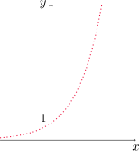
Los “huecos” de esta gráfica corresponden a los valores \(f(x)\) cuando \(x\) es un número irracional.
Podemos pensar en completar estos espacios definiendo a \(f\) como una función creciente. Por ejemplo, si tomamos \(a=2\) y queremos conocer el valor de \(2^{\sqrt{3}}\), observamos primero que
\[ 1\text{.}7<\sqrt{3}<1\text{.}8 \]
y como la función es creciente, debe ocurrir que
\[2^{1\text{.}7}<2^{\sqrt{3}}<2^{1\text{.}8}.\]
Como tanto \(1\text{.}7\) como \(1\text{.}8\) son racionales, podemos calcular \(2^{1\text{.}7}\) y \(2^{1\text{.}8}\), obteniendo una aproximación del número \(2^{\sqrt{3}}\). Si se desea conocer con más precisión, notemos que
\[ 1\text{.}73<\sqrt{3}<1\text{.}74 \quad\Longrightarrow\quad 2^{1\text{.}73}<2^{\sqrt{3}}<2^{1\text{.}74} \]
\[ 1\text{.}732<\sqrt{3}<1\text{.}733 \quad\Longrightarrow\quad 2^{1\text{.}732}<2^{\sqrt{3}}<2^{1\text{.}733} \]
\[ 1\text{.}73205<\sqrt{3}<1\text{.}73206 \quad\Longrightarrow\quad 2^{1\text{.}73205}<2^{\sqrt{3}}<2^{1\text{.}73206} \]
Es posible demostrar que existe un único número mayor que todos los valores
\[ 2^{1\text{.}73}, 2^{1\text{.}732}, 2^{1\text{.}73205}, \dots \]
y menor que todos los números
\[ 2^{1\text{.}74}, 2^{1\text{.}733}, 2^{1\text{.}73206}, \dots \]
Entonces definimos \(2^{\sqrt{3}}\) como este número. Usando el proceso de aproximación anterior podemos obtener la siguiente estimación (correcta hasta seis cifras decimales)
\[ 2^{\sqrt{3}}\approx 3\text{.}321997 \]
Este ejemplo puede repetirse con cualquier otro número irracional \(x\) y, de esta manera, completar la gráfica punteada anterior.
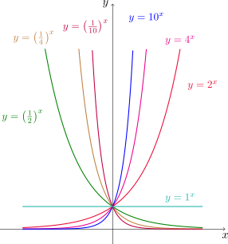
Observemos que, si \(f(x)=a^{x}\) entonces
\[ \left(\frac{1}{a}\right)^x=\frac{1}{a^x}=a^{-x}=f(-x), \]
con lo que la gráfica de \(y=(1/a)^x\) puede obtenerse de la de \(f\) reflejándola con respecto al eje \(y\).
Proposición (Leyes de los exponentes)
Sean \(a,b\) positivos y \(x,y\) números reales. Entonces
- \(a^{x+y}=a^x\,a^y\).
- \(a^{x-y}=\displaystyle \frac{a^x}{a^y}\).
- \(\left(a^x\right)^y=a^{xy}\).
- \((ab)^x=a^x\,b^x\).
Trazar la gráfica de \(y=3-2^x\). Determinar su dominio e imagen.
Comencemos con el gráfico de \(y=f(x)=2^x\).
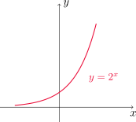
Para obtener el de la función deseada, reflejamos éste respecto del eje \(x\) y luego realizamos una traslación vertical, tres unidades hacia arriba. Así, resulta
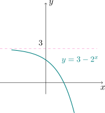
Como la expresión \(2^x\) está definida para cualquier número real, tenemos que el dominio es \(D_f=\mathbb{R}\). Por otro lado, \(2^x>0\) implica que \(-2^x<0\), y si sumamos 3 a ambos miembros de la desigualdad concluimos que \(3-2^x<3\), es decir, \(y<3\). Con esto vemos que \(\operatorname{Im}(f)=(-\infty,3)\).
Aplicación: modelos poblacionales
Consideremos una población de bacterias en un medio nutriente homogéneo. Al realizar mediciones periódicas, se observa que la población se duplica cada hora.
Si inicialmente se cuenta con 1000 individuos, ¿qué función permite modelar la población en cada instante de tiempo?
Si \(p(t)\) denota la cantidad de individuos a tiempo \(t\), medido en horas, entonces observemos que
\[ \begin{aligned} p(0)&=1000\\ p(1)&=2p(0)=2^1\times 1000\\ p(2)&=2p(1)=2\times(2\times 1000)=2^2\times 1000\\ p(3)&=2p(2)=2\times(2^2\times 1000)=2^3\times 1000 \end{aligned} \]
continuando este patrón, podemos ver que
\[ p(t)=1000\times 2^t. \]
El número \(e\)
Hay una base \(a\) en la función exponencial que será especialmente útil. La elección de la base influye en la forma en que la gráfica de \(y=a^x\) cruza al eje \(y\).
La recta tangente en el punto (0,1) (que luego definiremos más precisamente, pero que podemos pensar como la recta que sólo toca al gráfico en ese punto) para \(y=2^x\) es \(m\approx 0\text{.}7\) y para \(y=3^x\) es \(m\approx 1\text{.}1\).
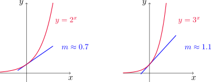
El número \(e\) es aquella base que se elige de modo que la recta tangente al gráfico de \(y=e^x\) en el punto \((0,1)\) tenga pendiente \(m=1\).
El gráfico de \(y=e^x\) se encuentra entre los de \(y=2^x\) e \(y=3^x\). El valor exacto hasta cinco cifras decimales de \(e\) es
\[ e\approx 2\text{.}71828 \]
Dibujar la función \(y=\displaystyle\frac{1}{2}e^{-x}-1\). Determinar su dominio y rango.
Para graficar la función dada podemos partir de \(y=e^x\). Primero reflejamos la curva con respecto al eje \(y\) obteniendo el de \(y=e^{-x}\), y seguidamente realizamos un alargamiento horizontal en un factor 2 y finalmente un desplazamiento vertical de una unidad hacia abajo. De esta manera, el gráfico resultante es
Tenemos que el dominio es \(\mathbb{R}\) y, como \(e^{-x}>0\), al multiplicar por \(1/2\) y restar \(1\) obtenemos \(\displaystyle \frac{1}{2}e^{-x}-1>-1\), con lo cual el conjunto imagen es \((-1,+\infty)\).
1.6: Funciones inversas y logarítmicas
Una función \(f\) se llama uno a uno o inyectiva si nunca toma el mismo valor dos veces. Es decir, si se cumple que
\[ x_1\neq x_2 \Longrightarrow f(x_1)\neq f(x_2) \tag{2.1}\]
para todos \(x_1,x_2\in D_f\). O, equivalentemente, si
\[ f(x_1)=f(x_2) \Longrightarrow x_1=x_2 \tag{2.2}\]
para todos \(x_1,x_2\in D_f\).
En el siguiente esquema vemos dos funciones: \(f\) es uno a uno, pero \(g\) no lo es.
Geométricamente, si \(f\) es una función uno a uno, entonces ninguna recta horizontal puede cortar al gráfico más de una vez. Si hay al menos una recta horizontal que corta al gráfico de \(f\) más de una vez, entonces \(f\) no es uno a uno.
Prueba de la línea horizontal
Una función es uno a uno si y sólo si ninguna recta horizontal corta a su gráfico más de una vez.
¿Es \(f(x)=x^3\) una función uno a uno?
Si dibujamos el gráfico de \(f\), la prueba de la línea horizontal sugiere que \(f\) es uno a uno.
Ahora vamos a utilizar la ecuación (2.2) para demostrarlo analíticamente. Sean \(x_1\) y \(x_2\) en \(\mathbb{R}\) de modo que \(f(x_1)=f(x_2)\). Esto significa que \(x_1^3=x_2^3\), y aplicando raíz cúbica a ambos miembros obtenemos que \(x_1=x_2\). Es decir, la igualdad \(f(x_1)=f(x_2)\) implica que \(x_1=x_2\). En consecuencia, \(f\) resulta ser uno a uno.
¿Es \(f(x)=x^2\) una función uno a uno?
Si graficamos \(f(x)=x^2\), la prueba de la línea horizontal indica que \(f\) no es uno a uno, es decir, existen puntos distintos del dominio donde \(f\) toma el mismo valor.
Para comprobar esto analíticamente, veamos que la ecuación (2.1) no se satisface. Para ello, basta con encontrar un par de valores \(x_1\) y \(x_2\) en el dominio tales que \(x_1\neq x_2\) pero que \(f(x_1)=f(x_2)\). Si consideramos \(x_1=-2\) y \(x_2=2\) claramente es \(x_1\neq x_2\). Sin embargo
\[ f(x_1)=f(-2)=(-2)^2=4=2^2=f(2)=f(x_2) \]
con lo que \(f(x_1)=f(x_2)\). De esta forma, \(f\) no puede ser una función uno a uno.
Sea \(f\) una función uno a uno con dominio \(A\) y rango \(B\). Entonces su función inversa tiene dominio \(B\) y rango \(A\), y se define de manera que
\[ f^{-1}(y)=x\quad \Longleftrightarrow\quad f(x)=y, \tag{2.3}\]
para cualquier \(y\) en \(B\).
Notemos que es importante que \(f\) sea uno a uno: de lo contrario, al intentar definir \(f^{-1}\) podría ocurrir que esta ley no corresponda a una función (\(f^{-1}\) no puede tomar más de un valor en cada \(y\) en \(B\)).
Al comparar \(f\) con \(f^{-1}\) vemos que cada una invierte el efecto de la otra. Notar que
\[ \operatorname{Dom}(f^{-1})=\operatorname{Im}(f) \]
y también
\[ \operatorname{Im}(f^{-1})=\operatorname{Dom}(f). \]
Por ejemplo, si \(f(x)=x^3\) entonces \(f^{-1}(y)=y^{1/3}\). Pues, si \(y=x^3\) entonces
\[ f^{-1}(y)=f^{-1}(x^3)=(x^3)^{1/3}=x. \]
Recíprocamente, si \(x=y^{1/3}\) entonces
\[ f(x)=f(y^{1/3})=(y^{1/3})^3=y. \]
El siguiente diagrama muestra que \(f^{-1}\) invierte el efecto de \(f\)
Si sustituimos \(x\) e \(y\) en las correspondientes igualdades de (2.3) obtenemos
\[ f^{-1}(f(x))=x, \quad \text{ para } \quad x\in A \tag{2.4}\]
\[ f(f^{-1}(y))=y, \quad \text{ para } \quad y\in B \tag{2.5}\]
llamadas ecuaciones de cancelación.
No confundir el \(-1\) de \(f^{-1}\) con un exponente. Ésta es simplemente una notación para referirse a la función inversa de \(f\), y no significa \(1/f(x)\).
¿Cómo encontrar la función inversa de una función uno a uno?
Para ello podemos seguir los siguientes pasos:
- Escribir \(y=f(x)\).
- Resolver la ecuación para \(x\).
- Intercambiar \(x\) e \(y\).
Encontrar la función inversa de \(f(x)=x^3+2\).
Primero verifiquemos que \(f\) es una función uno a uno. Sean \(x_1\) y \(x_2\) dos números en el dominio de \(f\) (es decir, en \(\mathbb{R}\)) tales que \(f(x_1)=f(x_2)\). Entonces tenemos
\[ x_1^3+2=x_2^3+2. \]
Restando 2 a ambos miembros y luego aplicando raíz cúbica, concluimos que \(x_1=x_2\), y entonces \(f\colon \mathbb{R}\to \mathbb{R}\) es un función uno a uno, en virtud de (2.2).
Ahora procedemos a calcular su función inversa realizando los pasos antes descriptos. Si intercambiamos \(y\) con \(x\) resulta
\[ x=y^3+2 \]
y a continuación, despejando \(y\) obtenemos
\[ y=\sqrt[3]{x-2}. \]
De esta manera, \(f^{-1}\colon \mathbb{R}\to \mathbb{R}\) está dada por
\[ f^{-1}(x)=\sqrt[3]{x-2}. \]
Al intercambiar \(y\) con \(x\) podemos hallar el gráfico de \(f^{-1}\) a partir del de \(f\). Por definición, sabemos que \(f(a)=b\) si y sólo si \(f^{-1}(b)=a\). Entonces
\[ (a,b)\in \text{Gráf}\,(f)\quad \text{ si y sólo si }\quad (b,a)\in \text{Gráf}\,(f^{-1}). \]
Como los puntos \((a,b)\) y \((b,a)\) son simétricos respecto de la recta \(y=x\), el gráfico de \(f^{-1}\) puede obtenerse reflejando el de \(f\) sobre la recta \(y=x\).
Trazar el gráfico de \(f(x)=\sqrt{-1-x}\) y el de su función inversa en un mismo sistema de ejes.
Notemos que \(D_f=(-\infty,-1]\) e \(\operatorname{Im}(f)=[0,+\infty)\). Veamos que \(f\) es efectivamente una función uno a uno. Usaremos nuevamente la definición (2.2). Si \(x_1\) y \(x_2\) son dos números en el dominio tales que \(f(x_1)=f(x_2)\), entonces tenemos que
\[ \sqrt{-1-x_1}=\sqrt{-1-x_2}. \]
Elevando al cuadrado y sumando uno en ambos miembros resulta
\[ -x_1=-x_2, \]
y al multiplicar ambos lados de la igualdad por \(-1\) concluimos que \(x_1=x_2\).
Ahora calculamos \(f^{-1}\) procediendo como en el ejemplo anterior. Intercambiando \(y\) con \(x\) obtenemos
\[ x=\sqrt{-1-y} \]
con lo cual
\[ f^{-1}(x)=-x^2-1. \]
La función obtenida luce, a primera vista, como una parábola. Sin embargo, recordar que \(D_{f^{-1}}=[0,+\infty)\) por lo tanto la gráfica de la función inversa corresponde sólamente a la “mitad derecha” de la parábola.
Funciones logarítmicas
Si \(a>0\) y \(a\neq 1\) la función exponencial \(y=a^x\) es uno a uno. Entonces tiene función inversa, llamada función logarítmica de base \(a\) y denotada como
\[ y=\log_a x. \]
Utilizando la definición de función inversa tenemos que
\[ \log_a x=y\quad \Longleftrightarrow \quad a^y=x. \]
En definitiva, si \(x>0\), \(\log_a x\) es el exponente al que debe elevarse a \(a\) para obtener \(x\). Por ejemplo, \(\log_2 8=3\) ya que \(2^3=8\).
Las ecuaciones de cancelación en este caso son
\[ \log_a (a^x)=x, \quad \text{ para } \quad x\in \mathbb{R} \]
y también
\[ a^{\log_a x}=x, \quad \text{ para } \quad x>0. \]
La función \(y=\log_a x\) tiene dominio \((0,\infty)\) y rango \(\mathbb{R}\). Su gráfico puede obtenerse al reflejar el de \(y=a^x\) respecto de \(y=x\).
Como la gráfica de \(y=a^x\) pasa por el punto \((0,1)\), la de su inversa \(y=\log_a x\) pasa por \((1,0)\).
Proposición (Leyes de los logaritmos)
Sean \(x\) e \(y\) números reales positivos y \(a>0, a\neq 1\). Entonces
(1) \(\log_a(xy)=\log_a x+\log_a y\).
(2) \(\log_a\!\left(\frac{x}{y}\right)=\log_a x-\log_a y\).
(3) \(\log_a(x^r)=r\log_a x,\quad r\in\mathbb{R}\).
Evalúe \(\log_2 80-\log_2 5\) utilizando las leyes de los logaritmos.
Si escribimos \(80=16\cdot 5=2^4\cdot 5\), entonces aplicando las leyes de los logaritmos (1) y (3) resulta
\[ \log_2 80-\log_2 5=\log_2(2^4\cdot 5)-\log_2 5=\log_2(2^4)+\log_2 5-\log_2 5=4\log_2 2=4\cdot 1=4. \]
Logaritmos naturales
Cuando la base \(a\) es el número \(e\), el logaritmo recibe el nombre de logaritmo natural o neperiano y se denota por \(\log_e x=\ln x\). En este caso, usando la definición de inversa vemos que
\[ \ln x=y \quad\Longleftrightarrow\quad e^y=x. \tag{2.6}\]
Las ecuaciones de cancelación son
\[ \ln (e^x)=x, \quad \text{ para } \quad x\in \mathbb{R} \tag{2.7}\]
y también
\[ e^{\ln x}=x, \quad \text{ para } \quad x>0. \tag{2.8}\]
Encuentre \(x\) si \(\ln x=5\).
Utilizando la equivalencia (2.6) obtenemos que
\[ \ln x=5 \quad \Longleftrightarrow \quad x=e^5. \]
Resuelva la ecuación \(e^{5-3x}=10\).
Aplicamos logaritmo natural a ambos miembros de la igualdad
\[ \ln\left(e^{5-3x}\right)=\ln 10 \]
y luego utilizamos la ecuación de cancelación, obteniendo
\[ 5-3x=\ln 10, \quad \text{ lo que implica que }\quad x=\frac{5-\ln 10}{3}. \]
Expresar a \(\ln a+\tfrac{1}{2}\ln b\) como un solo logaritmo.
Utilizamos las leyes de los logaritmos (1) y (3) podemos escribir
\[ \ln a+\frac{1}{2}\ln b=\ln a+\ln b^{1/2}=\ln\left(ab^{1/2}\right)=\ln\left(a\sqrt{b}\right). \]
Si \(a>0\), \(a\neq 1\) entonces podemos escribir
\[ \log_a x=\frac{\ln x}{\ln a}, \]
conocida como fórmula de cambio de base. Más generalmente, si \(a\) y \(b\) son positivos y distintos de \(1\) entonces
\[ \log_b x=\frac{\log_a x}{\log_a b}\quad \text{(conversión de base $b$ a base $a$)} \]
Trazar la gráfica de \(y=\ln(x-2)-1\).
Partiendo del gráfico de \(y=\ln x\), podemos obtener la curva deseada desplazando la anterior dos unidades para la derecha y luego una unidad hacia abajo.
Funciones trigonométricas inversas
Si intentamos calcular las funciones inversas de las trigonométricas nos encontramos con el problema de que no son uno a uno. Entonces debemos restringir sus dominios a un intervalo adecuado donde tomen todos los valores en los respectivos rangos y sean uno a uno.
Por ejemplo, si restringimos la función \(y=f(x)=\operatorname{sen} x\) al intervalo \(I=[-\tfrac{\pi}{2},\tfrac{\pi}{2}]\), entonces \(f\) toma todos los valores del intervalo \([-1,1]\) (su rango) y resulta uno a uno en \(I\).
La función inversa del seno restringido a este intervalo existe y se denota mediante \(\operatorname{sen}^{-1}\) o \(\operatorname{arcsen}\), y se conoce como función inversa del seno o función arco seno.
Por la definición de inversa tenemos que
\[ \operatorname{sen}^{-1} x=y\quad \Longleftrightarrow\quad \operatorname{sen} y=x \qquad -\frac{\pi}{2}\leq y\leq \frac{\pi}{2}. \]
Si \(-1\leq x\leq 1\), \(\operatorname{sen}^{-1} x\) es un número en el intervalo \([-\tfrac{\pi}{2},\tfrac{\pi}{2}]\) cuyo seno es \(x\).
En este caso, las ecuaciones de cancelación resultan
\[ \operatorname{sen}^{-1}(\operatorname{sen} x)=x, \quad para \quad -\tfrac{\pi}{2}\leq x\leq \tfrac{\pi}{2} \]
y también
\[ \operatorname{sen}(\operatorname{sen}^{-1} x)=x, \quad para \quad -1\leq x\leq 1. \]
Para el caso de la función coseno se procede de forma similar. La función \(y=\cos x\) es uno a uno y toma todos los valores del rango si nos restringimos al intervalo \([0,\pi]\). Entonces existe su función inversa, denotada por \(\cos^{-1}\) o \(\operatorname{arccos}\) y llamada función inversa del coseno o función arco coseno.
En virtud de la definición de inversa tenemos que
\[ \cos^{-1}x=y\quad\Longleftrightarrow\quad \cos y=x\qquad 0\leq y\leq \pi. \]
El dominio de \(y=\operatorname{arccos} x\) es el intervalo [-1,1] y el rango el intervalo \([0,\pi]\).
Las ecuaciones de cancelación son
\[ \cos^{-1}(\cos x)=x, \quad \text{ para } \quad 0\leq x\leq \pi \]
como también
\[ \cos(\cos^{-1} x)=x, \quad \text{ para } \quad -1\leq x\leq 1. \]
Para el caso de la función tangente, resulta uno a uno si nos restringimos al intervalo \(\displaystyle\left(-\frac{\pi}{2},\frac{\pi}{2}\right)\).
En este intervalo \(y=\tan x\) posee función inversa, llamada función tangente inversa o arcotangente, denotada \(y=\tan^{-1} x\) o \(y=\operatorname{arctan} x\).
Usando la definición de inversa obtenemos la relación
\[ \tan^{-1} x=y\quad\Longleftrightarrow\quad x=\tan y\qquad -\frac{\pi}{2}<y<\frac{\pi}{2}. \]
Este gráfico presenta dos asíntotas horizontales, cuyas ecuaciones son \(y=-\tfrac{\pi}{2}\) e \(y=\tfrac{\pi}{2}\). Esto se corresponde con el hecho de que la función tangente tiene las asíntotas verticales \(x=-\tfrac{\pi}{2}\) y \(x=-\tfrac{\pi}{2}\).
Las ecuaciones de cancelación son
\[ \tan^{-1}(\tan x)=x, \quad \text{ para } \quad -\tfrac{\pi}{2}< x<\tfrac{\pi}{2} \]
y
\[ \tan(\tan^{-1} x)=x, \quad \text{ para } \quad x\in \mathbb{R}. \]
Simplificar la expresión \(\cos(\operatorname{arctan} x)\).
Sea \(y=\operatorname{arctan} x\). Entonces \(\tan y =x\). Dado que queremos calcular \(\cos y\), debemos expresar el coseno del número \(y\) en términos de la tangente. Es sencillo verificar que
\[ 1+\tan^2 y = \frac{1}{\cos^2 y} \]
y utilizando esa relación, obtenemos
\[ \cos^2 y =\frac{1}{1+\tan^2 y}. \]
Dado que \(y\in \left(-\frac{\pi}{2},\frac{\pi}{2}\right)\), \(\cos y>0\) y despejando deducimos que
\[ \cos(\operatorname{arctan} x) = \cos y =\sqrt{\frac{1}{1+\tan^2 y}}=\frac{1}{\sqrt{1+x^2}}. \]
Las inversas de las funciones trigonométricas restantes no aparecen con frecuencia. Las enunciamos a continuación.
- Función cosecante inversa o arcocosecante.
\[ y=\operatorname{csc}^{-1} x \,\, \quad (|x|\geq 1)\quad \Longleftrightarrow \quad\csc y=x, \,\,\,\, y\in (0,\tfrac{\pi}{2}]\cup (\pi,\tfrac{3}{2}\pi]. \]
- Función secante inversa o arcosecante.
\[ y=\operatorname{sec}^{-1} x \,\, \quad (|x|\geq 1)\quad \Longleftrightarrow \quad\sec y=x, \,\,\,\, y\in [0,\tfrac{\pi}{2})\cup [\pi,\tfrac{3}{2}\pi). \]
- Función cotangente inversa o arcocotangente.
\[ y=\operatorname{cot}^{-1} x \,\, \quad (x\in\mathbb{R})\quad \Longleftrightarrow \quad\cot y=x, \,\,\,\, y\in (0,\pi). \]